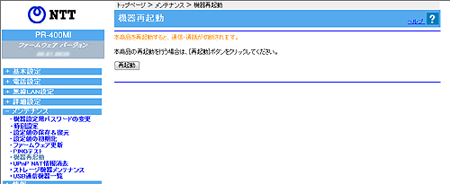

メンテナンス−機器再起動
本商品では、Web ブラウザから本商品の再起動を行うことができます。
＜お知らせ＞
設定を保存し再起動が完了した時点で、設定した内容にしたがって本商品が動作します。
※「Web設定」画面に表示されているボタンについての説明は
こちら

1.
［再起動］をクリックする
本商品の再起動中の画面が表示され、本商品が再起動します。
＜お知らせ＞
再起動中は、Webブラウザで本商品にアクセスすることはできません。
2.
アラームランプが消灯したことを確認し、［再表示］をクリックする
PPPランプが
緑点灯
または
橙点灯
すれば、インターネットへのアクセスが可能となります。
↑ページのトップへ